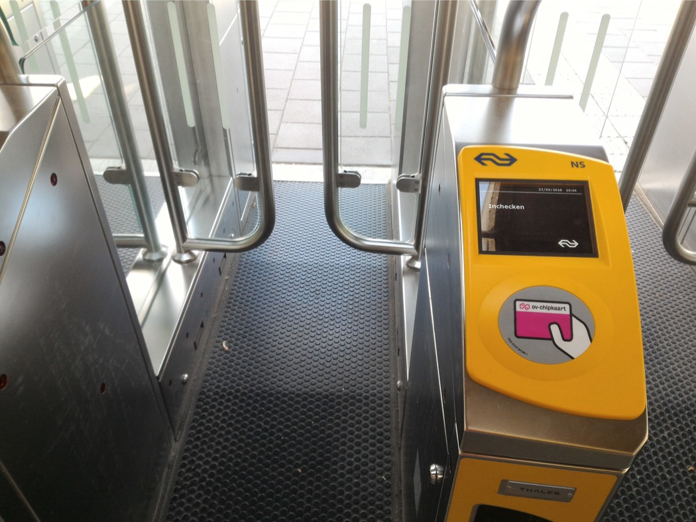
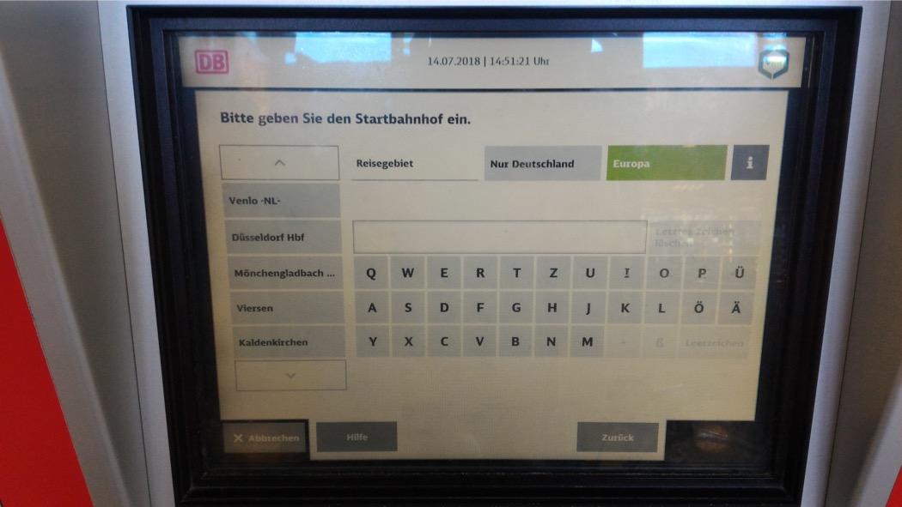

Greetings! Here are some tips on travelling by train in/to/from/through the Netherlands. See also the home page for tips on train travel in Benelux in general; not all tips about the Netherlands in that page are repeated here.
The Netherlands is known as Nederland in Dutch, Nederlân in Frisian, Niederlande in German, and Pays-Bas in French. This is the Netherland's governmental website, and tourism website. The Netherlands is also commonly referred as Holland in many languages (e.g. Hulanda in Papiamento), when in fact Holland is just a region of the Netherlands (albeit the most properous region, nowadays the provinces of North Holland and South Holland). For branding purposes, the Netherlands do sometimes call itself Holland.
Here we will only talk about European Netherlands; the Netherlands also includes Caribbean Netherlands: Bonaire (government, tourism), Sint Eustatius (government, tourism) and Saba (government, tourism). The Kingdom of the Netherlands includes the contituent countries of the Netherlands, Aruba, Curaçao, and Sint Maarten.
A number of companies run passenger rail services in the Netherlands. The following map shows the coverage of the various railway companies in the Netherlands (plus Belgium and Luxembourg).
Train operators and their networks in Benelux
Dutch operators of non-high-speed and semi-high-speed trains:
NS Nederlandse Spoorwegen 'Dutch Railways' (domestic website, android, iOS; international website, android, iOS): the Dutch national railway company; runs the majority of trains in the Netherlands.
Intercity direct (ICd) is a semi-high-speed service within the Netherlands. (ICd trains run on high-speed rail, some sections of which are only run by them or high-speed trains, but they are not capable of doing 200+ km/h.) For domestic travel, there is a surcharge on the Schiphol – Rotterdam high-speed line (see below). International ICd is an extension of the domestic ICd service: this Amsterdam – Brussels semi-high-speed service is run together with NMBS/SNCB (Belgian Rail; domestic website, android, iOS; international website, android, iOS).
There are also four InterCity's per day between The Hague and Brussels, also run together with NMBS/SNCB. This The Hague – Brussels IC, and the Amsterdam – Brussels ICd, are often referred to as the 'Benelux train'. For domestic trips within the Netherlands, other than the ICd surcharge, they have normal NS ticketing.
The Amsterdam – Berlin InterCity service is run together with DB (German Rail; website, android, iOS). Domestic trips on this service within the Netherlands has normal NS ticketing. Seat reservation is not possible for trips within the Netherlands. InterCity in Benelux has the same pricing as local trains, unlike Germany.
NS also runs the Gouda – Alphen aan den Rijn line for R-net, a public-transport brand of the regional governments in western Netherlands. The Gouda – Alphen aan den Rijn line follows normal NS ticketing rules.
Qbuzz: primarily a bus company, runs the Dordrecht – Gorinchem – Geldermalsen train service, as part of the R-net network. Subsidiary of Busitalia, part of Ferrovie dello Stato Italiane, owned by the Italian state.
Arriva: subsidiary of DB. Runs many regional trains in the Netherlands, especially in the east of the country. Dutch Arriva trains and ticketing extends into Germany at: Weener, and Leer (Ostfriesland) in the north (RB 57; the railway bridge between Weener and Leer collapsed, and replacement buses to/from Leer will run for some more years); and Herzogenrath, Aachen West, and Aachen Hauptbahnhof in the south (RE 18).
Blauwnet: public-transport brand of the province of Overijssel in eastern Netherlands. Trains run by Arriva (Zwolle – Emmen, Almelo – Hardenberg), or Keolis Nederland (Zwolle – Kampen, Zwolle – Enschede, Zutphen – Oldenzaal). Keolis is majority owned by SNCF (French Rail).
Breng: primarily a bus company, runs additional train services between Arnhem Centraal and Doetinchem, in parallel with Arriva's Arnhem Centraal – Doetinchem – Winterswijk service in eastern Netherlands. Follows Arriva's ticketing rules for this line.
Valleilijn: the Amersfoort – Ede-Wageningen train line is run by Connexxion, the parent company of Breng, and ultimately majority owned by the French state.
German and Belgian operators with non-high-speed trains running in the Netherlands:
Eurobahn/Keolis Deutschland: Hengelo – Bielefeld Hauptbahnhof (RB 61), Venlo – Hamm (Westfalen) (RE 13). The Hengelo line has two stations in the Netherlands: Hengelo, and Oldenzaal. Domestic travelling within the Netherlands follows Blauwnet/Keolis Nederland ticketing rules. (For the Venlo line, only Venlo is in the Netherlands.)
DB Regio NRW: Enschede – Münster (Westfalen) Hauptbahnhof (RB 64), Enschede – Dortmund Hauptbahnhof (RB 51). The Enschede lines (RB 64, RB 51) have three stations in the Netherlands: Enschede, Enschede De Eschmarke, Glanerbrug. Domestic travelling on this line in the Netherlands follows Blauwnet/Keolis ticketing rules.
Abellio: Arnhem Centraal – Düsseldorf Hauptbahnhof (RE 19). This line has two stations in the Netherlands: Arnhem Centraal and Zevenaar. Domestic travelling in the Netherlands follows Arriva ticketing rules (despite Abellio being an NS subsidiary).
NMBS/SNCB (Belgian Rail) runs two of its own local train services into the Netherlands: Maastricht – Liège-Guillemins (– Hasselt), and Roosendaal – Antwerpen-Centraal – Puurs. The Maastricht Line (Dutch / French) has three stations in the Netherlands: Maastricht, Maastricht Randwyck, Eijsden. Domestic travelling in the Netherlands follows NS ticketing rules. (For the Roosendaal Line (Dutch / French), only Roosendaal is in the Netherlands.)
High-speed rail service operators:
Thalys (Amsterdam – Schiphol – Rotterdam – Antwerp – Brussels – Paris, seasonal trains to Bourg Saint-Maurice or Marseille; trains to Paris CDG and Marne-la-Vallée begins in April). It has its own ticketing. The two largest shareholder are SNCF and NMBS/SNCB.
Eurostar (Amsterdam – Rotterdam – Brussels – London). It has its own ticketing. The trip from London is a direct service. In the other direction, the Eurostar trains from the Netherlands stop for over an hour in Brussels, and passengers have to go through border and security controls at Brussels. (Eurostar usually puts customers from the Netherlands on Thalys services to Brussels.) Direct service from the Netherlands starts at the end of 2019 at the earliest. The majority shareholder of Eurostar is SNCF.
ICE International (Amsterdam – Utrecht – Arnhem – Oberhausen – Duisburg – Düsseldorf – Cologne – Frankfurt Airport – Frankfurt/...Basel). Travelling on the ICE within the Netherlands requires just a normal domestic ticket, plus a ICE supplement (see below). International travel and domestic travel within Germany follow German long-distance ticketing. ICE International is a consortium between NS and DB that runs the Netherlands – Germany and Belgium – Germany ICE services.
Based on their stopping patterns, there are the following types of train services:
Sprinter (term primarily used by NS), or Stoptrein (by the other Dutch train companies), or RS (by Arriva): all-stops service; some Sprinter/Stoptrein services skip one or two stations along the way as part of their normal services. Analogous to RB in Germany, and L or S in Belgium. ('Sprinter' being all-stops in the Netherlands is the opposite to the case in Germany, where 'Sprinter', in 'ICE Sprinter', denotes the fastest possible train category.)
Sneltrein, or RE: a rarely encountered intermediate category; only operated by Arriva, all run in parallel with Stoptrein services on the same lines. From north to south:
Leeuwarden – Groningen
Zwolle – Coevorden – Emmen
Zwolle – Coevorden (peak supplementary service)
RE 18: Maastricht – Heerlen (– Aachen Hbf)
Analogous to RE in Germany. Or the old IR in Belgium.
InterCity (IC): stops primarily at major stations. On certain sections it can become an all-stops service, especially towards the end of the line. All domestic InterCity services are operated by NS, except the Raalte – Enschede IC service which is operated by Keolis/Blauwnet. The Amsterdam – Berlin InterCity service is jointly operated by NS and DB. The The Hague – Brussels InterCity service is jointly operated by NS and NMBS/SNCB.
Intercity direct (ICd): semi-high-speed service; domestic ICd Amsterdam Centraal – Schiphol Airport – Rotterdam Centraal (– Breda) is operated by NS; International ICd runs further from Breda to Brussels, and is operated jointly by NS and NMBS/SNCB.
High-speed services:
ICE (Intercity-Express): between Amsterdam and Frankfurt/Basel
Thalys: between Amsterdam and Brussels/Paris; Paris CDG and Marne-la-Vallée from April
Eurostar: Amsterdam Centraal – Rotterdam Centraal – Brussels-Midi/Zuid – London St. Pancras International
The following are network maps of the regular passenger rail services in the Netherlands.
InterCity and high-speed rail network in Benelux:
weekdaysweekend and public holidays
Local train network in the Netherlands (also included is a combined weekdays+weekend map):
weekdaysweekend and public holidaysweekdays+weekend
Nachtnet services are domestic InterCity services that run between approximately 00:00 till 05:00. Utrecht – Amsterdam – Schiphol Airport – The Hague – Rotterdam are linked every night. During the weekend (the Friday–Saturday and Saturday–Sunday nights) there are one or two Nachtnet services to other cities. Other than Nachtnet, many ordinary trains also run till some time pass 00:00, or even 01:00 (see, e.g., this). One difference between these ordinary services and the Nachtnet services is that the ordinary services get assisted boarding service till the last train (at stations where this service is available), whereas Nachtnet services has no assisted boarding service. Nachtnet services have the same ticketing as the other NS services. Tickets are valid for services with a scheduled departure time, at the station where you board the train, before 04:00 the day after the date printed on the ticket. For instance, with a ticket dated 28-05, the last train that you can catch is a train with a scheduled departure time of 03:59 on 29-05 at the station where you board that train.
Nachtnet in the Netherlands:
You may be interested in the printed timetables of the domestic and international train services in the Netherlands. (The information in these printed timetables is not necessarily up to date; always check with NS for the latest information. NS no longer publishes printed versions of the spoorboekje; printed versions by Rover/Treinreizigers.nl can be found here.)
Ticketing matters
There are two main types of tickets: e-ticket, which comes with a barcode, and OV-chipkaart, which is an NFC card (contactless).
E-tickets
E-tickets are tickets bought from the websites or apps of public transport providers. For trains:
The NS domestic website/app sells tickets for all domestic train journeys, including trains that are not run by them. The websites/apps of the other public transport providers also sell products that are specific to them. There is also the Tranzer app (android, iOS), where one can buy e-tickets for trains, some buses, and some taxi services in the Netherlands.
E-tickets have a barcode. You have to provide travel details like the 'from' and 'to' stations (NS no longer lets you nominate a 'via' station when issuing domestic tickets), date, single/return (for domestic tickets, return is within a day), class of travel (first/second class), and number of passengers (1 to 9 or 10 passengers). Other than travel details, you also have to provide personal details of all the travellers, like name and date of birth (the ticket can only be used by the person named on the ticket). Many e-tickets bought from the domestic NS website or the NS International website can have the E-ticket loaded to their respective app. Otherwise, an e-ticket has to be printed out on a piece of A4 paper. When using an e-ticket, you have to be able to show an ID if asked. The name on the ID and the name on the ticket have to match. Acceptable IDs are passport, national ID card, and driver's licence (the latter two probably refer to European ones).
The domestic NS website/app does not give discounted e-tickets for the normal single/return train tickets. With the NS International website/app, it automatically gives you a range of available prices. You can also specify railway subscription(s) that you have, and the applicable discount(s) is/are automatically applied.
A good deal that can be purchased from the domestic NS website is the off-peak group ticket for 4 to 7 travellers travelling together.
When using an e-ticket, checking in and out at the check-in portals are not required; just walk straight to the trains. If there are closed gates, the barcode can be used to open closed gates at train stations. Not all gates can read e-ticket barcodes, but there is always at least one that can read barcodes at each station with closed gates. (Like other frequently used barcode scanners, the station barcode scanners do not necessarily work very well; you might have to make multiple attempts at scanning the barcode before the gate opens. Or try another gate. Or ask for help.)
The reader at this gate reads both e-ticket barcodes and OV-chipkaartsThe reader at this gate only reads OV-chipkaarts
Belgian tickets and Thalys/Eurostar/DB e-tickets to the Netherlands most usually have a barcode that can open gates at Dutch railway stations. (Not all stations have gates.) For other German tickets, see below. If stuck, there are information poles near the gates, and you can press the blue i button for help; a staff member will then speak to you remotely (the other button is a red SOS button for emergencies). Alternatively, try to seek the attention of a station attendant.
An information pole
OV-chipkaart
OV-chipkaarts are near-field communication (NFC) cards; you place an OV-chipkaart near the reader within centimetres, the card is then read by the reader, and validated if everything is in order (the reader beeps and shows a green light). There are disposable OV-chipkaarts, and durable OV-chipkaarts.
Disposable OV-chipkaarts, and Dutch Rail ticket machines/ticket counters
Disposable OV-chipkaarts are short-term tickets issued by train-ticket machines. At ticket counters, all domestic tickets and many international tickets issued there also come in the form of a disposable OV-chipkaart. Rotterdam and Amsterdam also issue their short-term public transport tickets as disposable OV-chipkaarts.
A disposable OV-chipkaarts. This is a 2nd class Dagretour 'day return' ticket from Arnhem Centraal to Nijmegen on NS trains. The price is €8.60, and on top of that is a card-issuing surcharge of €1 for each card.
NS has three types of ticket machines. Only the usual ticket machines – the ones that are blue at the top with a white NS logo – sell disposable OV-chipkaart tickets. They also sell durable OV-chipkaarts. (The other two types of NS ticket machines – the ones that are yellow at the top with the word OV-chipkaarthouders 'OV-chipkaart holders', and narrow machines which say saldo opladen 'load credit' – are for people who already possess durable OV-chipkaarts.)
A normal NS ticket machine.From left to right: normal NS ticket machines, RET (Rotterdam public transport) ticket machines, NS machines for OV-chipkaart holders.
You can get tickets to and from all train stations in the Netherlands from NS ticket machines, even on (non-high-speed) train services run by other Dutch/German/Belgian train companies. The Arriva ticket machines also sell tickets to and from all train stations in the Netherlands, also in the form of disposable OV-chipkaarts.
NS ticket machines and the normal NS ticket counters sell the same range of single/return tickets. They also charge the same ticket-issuing fee. For domestic single/return tickets, the issuing cost of a disposable OV-chipkaart is €1 per card, which is added to the normal ticket price. (One machine-issued return ticket is therefore €1 cheaper than two equivalent single tickets.) This €1 fee does not apply to, e.g., Railrunner (child ticket), bicycle ticket, dog ticket, ICE supplement, ICd supplement, Euregio ticket (for the NL/BE/DE tripoint region), and international tickets. The NS ticket machines and the normal NS ticket counters can handle tickets to many destinations in Belgium and Luxembourg, and some closer-by destinations in Germany plus Berlin (see here for the list of possible destinations). They no longer sell tickets to the Belgian Rail destinations in France. As for high-speed-rail tickets, they can only print ICE tickets to destinations along the ICE line to Frankfurt (no seat reservation), and they cannot handle Thalys or Eurostar tickets. The ticket machines and the normal ticket counters can only handle full-fare ticket! (It is better to purchase tickets – especially international tickets – online in general.)
Other than the normal NS ticket counters, there are seven NS International ticket offices where you can purchase the full range of international tickets that NS International offers. However, for international tickets that the NS ticket machines cannot handle, the NS International offices charge a service fee of €7.5 per person, to a maximum of €22.50 per booking. Most NS International ticket offices also have self-service computers where you can make your own booking online through the normal NS International website (no service fee), and print the ticket(s) out.
With an NS ticket machine, you can switch between Dutch and English language. The main screen has three main options: One-way ticket, Day return ticket, and Other products.
Choose one of these three options at the initial screen; alternatively, if you already have a durable OV-chipkaart, place that at the card reader to the bottom right
When purchasing a domestic one-way/return ticket:
the most popular 'to' stations are displayed. If your intended destination is not on the list, you have to key in the first one or two letters of the name of the station, and then a list of stations beginning with those letters will appear. Press the button with the name of your inteded destination. Some destinations are not train stations; they combine train and tram/bus travel. For instance, if you look for destinations that begin with 'E', there are 'Efteling' (theme park) and 'Eindhoven Airport'; tickets to these include travel on train(s) and connecting bus(es). Not explained in the English page is that there are 'Arnhem Centraal +Bus' and 'Nijmegen +Bus' options, combining train trip to/from Arnhem Centraal and/or Nijmegen, and Breng buses to/from these stations. (The trial period is meant to have finished, but these two +Bus options have not been withdrawn so far.)
Pressing the 'Day return' button, you get a list of the most frequent destinations (here from Arnhem Centraal), or you type in the first one or two letters of your intended destination
after the 'to' station is selected, the 'from' station is displayed. The 'from' station is by default the station where the machine is located, but you can also change the 'from' station by pressing the 'from' button.
choose the date, class of travel (first or second class), and number of passengers. For domestic return tickets, the return journey has to be made within the day. A ticket is valid for trains of which the scheduled departure time, at the station where you board the train, is before 04:00 the following day. If you want to travel after that, you need to buy another ticket.
pay. Ticket machines DO NOT take banknotes. Some machines take coins. All machines take bank cards and credit cards (V PAY, Maestro, Visa, Mastercard; €0.5 surcharge for credit card). When using cards, the flow of procedures is: insert card, wait, withdraw card when it tells you to, input PIN code, press OK. Then the ticket comes out of the machine if the transaction is successful. (Visa and Mastercard are now accepted at all ticket machines and online. Foreign credit cards seem to work OK. I have seen bankcards from EU but non-Euro countries not working at NS ticket machines.)
For domestic tickets, Dutch ticket machines no longer give a 'via' option. (The NS website/app gives you a 'via' option, but this is only for journey planning; tickets cannot be purchased if a 'via' station is added.) If NS thinks that there are two reasonable routes for your journey, it will list the two options, show you the price difference, and ask you to specify the route you want to take. It also gives you a third option, which is paying the higher price, and it gives you a ticket that allows travelling on either route.
To purchase an international ticket from a ticket machine, the option for purchasing international tickets is embedded within the 'Other products' option at the initial screen. (Alternatively, if you have pressed the One-way or Day return option at the initial screen, you will only discover, after many steps, that these options are only for domestic tickets; a red button for purchasing international tickets will eventually appear in the bottom left corner.)
This is the screen after pressing the 'Other products' button
For international tickets, after inputting the 'from' and 'to' stations, a 'via' button will appear, showing you the default frontier point that you cross the border at. If you press the 'via' button', very often it gives you a list of alternative frontier points where you can cross the border, and then it gives you the price for each option. (Non-high-speed international rail tickets always show you the frontier point that you have to cross a border at.)
From Hengelo to Berlin, the Bad Bentheim frontier is the default 'via' optionAfter pressing the 'via' button, in this case, the machine gives you a choice of six railway frontiers along the Dutch–German border
NS ticket machines, and the usual NS ticket counters, no longer give discounted tickets; all tickets, both domestic and international, are full fare tickets. To benefit from samenreiskorting (see below), one needs a durable OV-chipkaart.
On the Valleilijn, there are no ticket machines at Hoevelaken and Barneveld Zuid selling disposable OV-chipkaart tickets! (There are only machines for durable OV-chipkaarts.)
There are German and Belgian train ticket machines at certain Dutch stations near the border. See the Germany and Belgium sections below.
Durable OV-chipkaart
Durable OV-chipkaarts are valid for five years. For regular public transport within European Netherlands, they are valid on all regular passenger trains (not Thalys and Eurostar, but valid on ICE with surcharge), metros, trams, the vast majority of buses (e.g. not on Schiermonnikoog Island), and some ferries. In Germany, they are also valid on the Arriva trains (and replacement buses) to Weener and Leer(notice the Arriva OV-chipkaart readers in Weener and Leer), and to Herzogenrath, Aachen West, and Aachen Hbf. OV-chipkaarts are valid on most Dutch cross-border buses (check carefully), and two German cross-border bus lines: a): in the VEJ area, bus 620 Bad Nieuweschans – Weener – Leer ZOB; and b) in the VRR area, bus SB58 Nijmegen – Kleve – Emmerich. (Valid at least when travelling within the Netherlands or going to/from the Netherlands.)
There are personal OV-chipkaarts and anonymous OV-chipkaarts. (They don't necessarily look like the ones below.)
A personal OV-chipkaart (left) and an anonymous OV-chipkaart (right)The other side
Anonymous OV-chipkaarts can be used by anyone, and the normal retail price is €7.5. (This is just the retail price, not a deposit!) Each OV-chipkaart can only be used by one person at a time; passengers 4 years old or above need their own OV-chipkaart (or other ticket). Anonymous OV-chipkaarts are sold at ticket machines, ticket counters, and at some shops (search for OV-chipkaart sales points here). In Germany, they can purchased at at least: a) the Arriva ticket machines in Weener and Leer in the north, b) in Aachen/Herzogenrath.
Personal OV-chipkaarts is for one particular person, whose details and photo are printed on the card. A personal OV-chipkaart also costs €7.5, but it is given out for free in some cases, e.g., when you order certain annualNS subscriptions. Otherwise, for people with an address in Benelux or Germany, you can order a personal OV-chipkaart from the OV-chipkaart website. (For people living elsewhere, it is complicated, and more expensive.)
One functional difference between anonymous and personal OV-chipkaarts is that subscriptions usually require personal OV-chipkaarts. See this page for other functional differences between an anonymous and personal OV-chipkaart.
Credit (i.e. money) can be added to a durable OV-chipkaart through ticket machines of NS, other Dutch railway companies, and many other public transport operators. There are also many free-standing OV-chipkaart terminals (they are usually yellow in colour) where one can add credit to an OV-chipkaart with a bank card. On the internet, one can add credit, or order certain tickets or subscriptions to an OV-chipkaart. However, after an online transaction, one needs to go to a ticket machine, or one of the many dedicated OV-chipkaart terminals, to load the product into the OV-chipkaart. Search here for OV-chipkaart service points.
A free-standing OV-chipkaart terminal
Asking for a refund of the credit in an OV-chipkaart is often not straightforward. An anonymous OV-chipkaart that has not yet expired can have its credit refunded at a service counter of a public transport operator if the credit is under €30.
As one checks in at a check-in portal at a station (or on a tram/bus/ferry), a deposit is deducted from the card. The deposit is between €0 to €20, depending on the public transport company, the type of OV-chipkaart, the subscription that a card has in it, etc. (Without an NS subscription, the deposit for catching NS trains is €20! See here for what the various companies charge for the deposit.) One can only successfully check in if, after the deposit, the credit in the OV-chipkaart is not under negative €4. When one checks out, a refund is given if the fare is less than the deposit, or extra credit is charged if the fare is more than the deposit.
If you want to change the class of travel temporarily, you can do this at a ticket machine. See this and this. The change expires on 04:00 the following day, unless you cancel it earlier. If you want to change the class of travel permanently, see this, or ask at a ticket office.
With a durable OV-chipkaart, checking out and then back in again at the same station within 35 minutes is consider a transfer. (With a transfer, the flagfall is not charged again.) Take note, that when you check in again, the balance in the card could have gone too low for the deposit since the last check-out.
To cancel a check-in, the deposit is refunded if one checks out again at the same station within 60 minutes.
With NS, one cannot check out within 100 seconds of checking-in; this is to prevent passengers from double-tapping the card, accidentally checking out after they have checked in. (You can also use this method to check whether you have already checked in. Another method is to check your travel history at a ticket machine.)
If you have forgotten to check in, try to check in before you step into a train. (In places with open gates, remember to check in on the 'check-in side', i.e. the side that is outside the paid area.) If you are already inside a train, contact the conductor. If not, you risk a fine of €50. (Conductors might be lenient on you if you have a subscription from their company, and if you forgot to check in no more than a few times in a year. In other cases, good luck.)
If you have forgotten to check out, you can go back to the station where you ended your journey and check out there within six hours of the last check-in. If not, go to a service counter of the public transport operator and ask for help. Failing that, try contacting OV-chipkaart. For people with a personal OV-chipkaart or an NS business card, there is a service that, amongst other things, alerts you if you have forgotten to check out.
One can check the credit in a card, or the travel history of the card, at ticket machines. Or at the OV-chipkaart website/app (android, iOS) if the card is linked to an account registered with the OV-chipkaart website.
Abonnementen and 'peak time'
NS and other public transport operators have various abonnementen 'subscriptions' that give discounted or unlimited travel of some sort. When peak/non-peak is referred to, non-peak is most usually 18:30–06:30 and 09:00–16:00 on weekdays, and the whole day on the weekend and holidays. On non-holiday weekdays: a) you can check in with non-peak rate a few (five?) minutes before 09:00 or 18:30, when the non-peak rate officially starts; b) the non-peak rate is valid as long as you check in before 06:30 or 16:00, and the scheduled departure time of the train that you catch is before 06:30 or 16:00 at that station. The non-peak rate remains valid until you leave the system. With NS at least, even checking out and then back in within 35 minutes within the NS system continues the non-peak rate (this is the case since 2016; but then if you check in during peak time, the peak rate would equally be continued even with a transfer!)
Note that promotional tickets may require you to leave trains before peak-time begins! Read the terms and conditions carefully.
When shopping for abonnementen 'subscriptions' from websites of public transport operators, the following are common Dutch terms that they use.
Altijd 'always': the entire day.
Dal 'valley': during off-peak hours.
Weekend 'weekend'.
Vrij 'free': unlimited usage, "all-you-can-eat".
Korting 'discount' or voordeel 'benefit': you get a discount.
Jaar 'year/annual'.
Maand 'month/monthly'.
Traject 'trajectory': not area-based, but trajectory-based.
Grens 'border': to/from a railway frontier point where trains cross an international border; this has to be combined with a corresponding Belgian or German ticket/subscription up to the Dutch border.
OV: openbaar vervoer 'public transport'; when a train company talks about 'OV', they often mean bus/tram/metro.
Kind 'child'.
Student 'student', scholier 'pupil', jong 'young', jeugd 'youth' (older than child, younger than adult).
Net: this usually means the entire Netherlands (plus most Dutch public transport that extends into Belgium/Germany)
Ster 'star': based on the old fare zones, a 1-star abonnement includes the fare zone itself, 2-star is the fare zone plus bordering fare zones, 3-star is 2-star plus their bodering fare zones, and so on until 6-star. A 7-star abonnement is the same as net, i.e. valid in the entire Dutch bus/tram/metro system. See here or here for the boundaries of the fare zones. This is a tool which shows you the validity area if you fill in the ID of the centrumzone 'centre zone' and the sterwaarde 'star value'. For example, central Utrecht is zone 5000, and a 2-star abonnement includes zone 5000 and the fare zones bordering 5000.
Gratis 'free/no cost' (for operational reasons, they may have to charge, like, €0.01).
Samenreiskorting
Samenreiskorting is the 40% discount that at most three other travellers get if they travel together with you if you have an NS subscription (except Kids Vrij). This discount is valid during off-peak. These co-travellers need to activate the samenreiskorting option in their own durable OV-chipkaart beforehand, through a ticket machine. (Ticket machines no longer sell discounted train tickets.) There is an option of having this status once in a day, or twice in a day (e.g. for a return journey). They need to be travelling with you during their entire trip to enjoy this status. A samenreiskorting status expires 35 minutes after checking out; in other words, a samenreiskorting status is maintained with a succesful transfer. When booking international tickets with NS International (except Thalys/Eurostar), there is an option to apply samenreiskorting, and the discount is automatically applied to the section in the Netherlands off full-fare tickets.
Other uses of durable OV-chipkaarts
The OV-chipkaart can also be used for other transport purposes, e.g. bicycle storage at many train stations, renting an OV-fiets, opening and locking a Greenwheels car. So far I have not seen the OV-chipkaart being used for other purposes, e.g. making purchases at supermarket.
Post-pay accounts
NS Flex; you add a subscription to it, and the subscription can be changed on a monthly bases. The ammount for the subscription and any other charges incurred are automatically deducted monthly from your bank account.
NS-Buisness Card is a monthly post-paid OV-chipkaart. People with a Kamer van Koophandel (Dutch Chamber of Commerce) number can order NS-Buisness Cards for themselves and their employees. Other than being a post-paid card that works at the usual places where an OV-chipkaart can be used, various subscriptions can be loaded to it.
Other forms of NFC tickets
As far as I know, there is nowhere in the Netherlands where you can use a contactless bankcard/creditcard/NFC phone to check in and out with public transport. (However, contactless payment for ticket purchase is quite common on bus/tram.)
Promotional tickets and 'tourist tickets'
There are promotional train tickets from time to time (but you'll need Dutch reading skills). Some are sold through NS' own leisure site, while others are sold in coorporation and through other physical or online stores. One place where these various deals are summarised is treinreiziger.nl. They can come in the form of disposable OV-chipkaarts, or coupon codes for e-tickets (they come with instructions, in Dutch). Some e-tickets can be loaded into the NS-app, while others must be printed out. These promotional tickets can be off-peak day tickets on trains, return tickets between prenominated stations, packages including train journeys and tourist attraction or food, etc. The day tickets and return tickets are under €20. These deals are all slightly different from each other; read the terms and conditions very carefully.
While not a promotional ticket, a similar good deal is the off-peak group ticket for 4 to 7 people.
NS sells the following 'tourist tickets' (they are aimed at tourists, but anyone can purchase them):
Amsterdam Travel Ticket: €17/€22.5/€28 for 1/2/3 days. Unlimited travels on NS trains amongst these stations: Schiphol Airport, Duivendrecht, and any Amsterdam- stations, unlimited travel on GVB trams/buses/metros/ferries, and unlimited travel on the Connexxion airport express bus 397 or N97. (GVB's own 24/48/72 hour tickets €8/€13.5/€19. A normal multi-day return ticket on Connexxion bus 397 is €10. Check the rules carefully.)
Amsterdam region travel ticket: €19.5/€28/€36.5/€45 for 1/2/3/4 days. Valid for unlimited trips on NS trains, and buses/trams/metros/ferries run by GVB, EBS, and Connexxion in the 'Amsterdam region'. See also the explanations from I amsterdam. The following shows the validity area for train travel. (Click the map to open a larger version in another tab/window.)
Railway stations within the validity area of the Amsterdam region travel ticket (area within the red dotted loop). Only Sprinter services are shown; InterCity and Intercity direct services between stations within this region (station names in bold) are also valid.
Holland travel ticket: €41 'off-peak' (outside 06:30–09:00 on weekdays, the whole day on the weekend/holiday), €61 any time, for travel on all trains and bus/tram/metro in the Netherlands for one day.
Day ticket: €53, unlimited travel on Dutch trains for an entire day.
If you hold an e-ticket, this section does not concern you; you do not need to check in or out. The barcode in your e-ticket (on a piece of paper, or in a mobile app) can be used to open closed gates at stations. There is at least one gate in each station with gates that can read e-ticket barcodes.
For holders of OV-chipkaarts: there are two types of check-in portals: poles and gates. The check-in poles are just standing structures where you tap your card for checking in or out. The same pole can be used for either checking in or checking out.
Check-in poles of two different companies on the platform of a station with no gates
On the other hand, check-in gates have barriers which, if closed, restrict access to the platforms, and only open as one checks in or out with an OV-chipkaart. One side of the gate has a card reader for checking in, and the other side has a card reader for checking out. Some stations have gates that are not closed, for at least part of the day. You still need to check in or out at these open gates at the correct side, as if the gates are closed.
Closed gates of two different companies; the two gates on the right are wide enough for wheelchair access
Whether stations have gates or not is not relative to the size of a station; some very small stations have gates, while some large stations do not have gates. This map of tariff units (2018 april) shows gated stations with a red symbol next to the name of a station.
Different train companies use different check-in portals. There are five systems of check-in portals: NS, Arriva, Blauwnet, Valleilijn, and R-net/Qbuzz. Most stations only have one system of check-in portals. Some have two, and only one station has three. There are more than five companies/brands running trains in the Netherlands. Use this algorithm to determine which system of check-in portal to use when you are using an OV-chipkaart (and not a barcode ticket):
If station has one system: use that system. (The R-net/NS line Alphen aan den Rijn – Gouda uses NS check-in portals; no need to check out and in again if changing between this line and the connecting NS lines);
If station has two systems, then one will be NS, and the other one is of another type.
If catching NS trains (including ICE Amsterdam – Frankfurt and IC Amsterdam – Berlin), or NMBS/SNCB (Belgian rail) trains, then use NS check-in portals
Otherwise use the non-NS system (including German local trains run by Abellio or DB regio, which are subsidiaries of NS and DB respectively
If station has three systems (Zutphen), use the respective check-in portal system (there is NS, Blauwnet, and Arriva)
This information is displayed in the operators map and the local train maps above. If in doubt, the NS journey planner (website or app) tells you which system to check in and out at what point when displaying a suggested itinierary.
NS journey planner's suggestion for travelling from Nijverdal to Klarenbeek, showing which station to transfer at, and checking in and out with whom
If you change trains within one system, you do not need to check out and in again when changing trains. (Except in rare cases where there are closed gates between the platforms that you have to reach.) If you change trains belonging to different systems, there are check-in poles of each system standing next to each other on the platform; you check out of one system (the system of the train that you have just stepped off), and then in with the other system (the system of the train that you are changing to). Checking out and in again within 35 minutes at the same station is considered a transfer. With NS, a transfer within the NS system continues the non-peak or peak rate (the English page is not up to date), depending on the time that the passenger first check into the NS system.
Check-in poles on the platform at Zutphen; from left to right: Arriva, NS, and BlauwnetCheck-in poles of Valleilijn/Connexxion at Amersfoort, next to NS onesIf it says overstappen 'transfer' on top, please only use these if you're actually changing trains; there are gates or poles elsewhere in the station for passengers leaving the rail systemAt some other stations with international trains, there are also these single check-in poles standing on certain platforms; you can use the check-in poles on the platform if you are switching between using an international ticket, and an OV-chipkaart for domestic travel
If you check out at one of the transfer poles on the platform, and then soon after check out at a gate at the same station, the gate will let you just pass through without charging extra.
If you check out at a gate and if there is no prior check-in record (e.g. you forgot to check in, you arrive in a train from Germany or Belgium and you accidentally use your Dutch OV-chipkaart to leave a station instead of your German/Belgian ticket), you will be charged the check-in deposit, which can be as much as €20.
There are some stations where NS and metro trains share the same paid area, or even an island platform; you can find their respective check-in poles standing next to each other for transfering.
Nearly all metro stations have OV-chipkaart ticket gates. On the other hand, with buses/trams/ferries, their card readers are inside the vehicle; you have to check IN and OUT inside each individual bus/tram/ferries that you board. BE VERY CAREFUL when changing between metros and trams: there are some stops served by both metros and trams, with a difference in height of platforms; the card readers for metro are on the platform or somewhere else, while the card readers for trams are inside the vehicle. You have to check out of one and check in with the other when changing between metro and tram, even if they are of the same company, and don't get them mixed up. This is an example: the lower platform is used by trams, their card readers are inside the tram; the higher platform is used by metro, their card readers are on the platform.
Surcharges
(The terms 'surcharge' and 'supplement' are used here interchangeably.) There are two services that incur surcharges on top of the normal domestic tariff in the Netherlands. Not having purchased them before boarding these trains can lead to a hefty administrative cost, or fine:
ICE supplement: travellers can travel on the ICE domestically in the Netherlands (Amsterdam Centraal – Utrecht Centraal – Arnhem Centraal) with a normal domestic ticket/OV-chipkaart, plus an ICE supplement. The ICE supplement is €2.4 (€2.6 from July), and it can be purchased as an e-ticket, a disposable OV-chipkaart from a ticket machine (no ticket-issuing fee), or loaded into a durable OV-chipkaart. The ICE supplement is not applicable to passengers with an NS subscription, NS-business card, student subscription, or children travelling on Railrunner or Kids Vrij. The ICE supplement is also not applicable to the section of ICE service in the Netherlands included in an international ticket.
Intercity direct (ICd) supplement: when travelling domestically in the Netherlands, on either the domestic or international ICd service, there is an ICd supplement on the high-speed rail line between Schiphol Airport and Rotterdam Centraal. The ICd supplement is €2.4 (€2.6 from July), and it can be purchased online as an e-ticket, or from a ticket machine as a disposable OV-chipkaart (no ticket-issuing fee). For people with a durable OV-chipkaart, there are ICd supplement poles (red in colour) on the platforms at Amsterdam Centraal, Schiphol Airport, Rotterdam Centraal, and Breda, where you can tap your durable OV-chipkaart once before you board the train. (Tapping this pole again within 30 minutes cancels the purchase. DO NOT tap the ICd supplement pole again after you get off the train.) The ICd supplement is lowered to €1.4 (€1.56 from July) if it is paid by tapping an ICd supplement pole DURING OFF-PEAK (i.e. you still get the off-peak rate at Amsterdam C or Breda right before the peak period even if the train would be travelling on the Schiphol – Rotterdam section during peak). The ICd supplment is not applicable to children travelling on a Railrunner ticket or Kids Vrij subscription, and passengers with an international rail ticket that is valid between Schiphol and Rotterdam.
Ticket machine at Rotterdam Centraal: when you buy a return ticket to Amsterdam Centraal, it asks you whether you want your ticket to include the ICd supplement twice for the return journey or notAn ICd supplement pole on the platform
Children, students, and seniors
0 to 3 year-olds do not need to pay, and do not need to have a ticket. They do not have the right to occupy a seat.
Children 4 to 11 years can get a Railrunner ticket, which costs €2.5, for one day of unlimited train travel in the Netherlands. It can be purchased as an e-ticket from the NS website, as a disposable OV-chipkaart from a ticket machine (no ticket-issuing cost), or loaded into a durable OV-chipkaart (the child needs their own anonymous or personal OV-chipkaart). With a Railrunner ticket, a child 4 to 11 years old can travel: a) independently in second class(!); or b) in first class when accompanied by an adult 18 years or older with a valid ticket in first class; each such adult can accompany at most three children, each with their own Railrunner ticket.
Alternatively, children can get a Kids Vrij subscriptions, currently costing €0.01 a year. The only extra cost is €7.5 if they do not already have a personal OV-chipkaart. A child travelling on Kids Vrij has to be accompanied by a passenger 12 years or older with a valid ticket. Each such older passenger can accompany at most three children, each with their own Kids Vrij subscription. The child travel in the same class as the accompanying older passenger.
Railrunner and Kids Vrij are valid for all train travel in the Netherlands (except Thalys and Eurostar). If it is in an OV-chipkaart, check in and out as usual. Children on these do not have to pay the ICE supplement or the ICd supplement (see above). For international travels: a) in Germany, with DB, children under 6 do not need a ticket; older children under 15 years old can have their names added to their parent's or grandparent's ticket, and these children travel for free; otherwise tickets for 6-14 year-olds are half the adult price; b) in Belgium, 0–3 year olds do not need to pay. For 4–11 year olds, each passenger 12 years or older with a valid ticket can take along four such children along for free; otherwise, a child ticket is required; c) in Luxembourg, children 12 or younger do not need to pay (public transport is set to become free for everyone from mid 2019). For France, see this page.
There are no special single or return tickets for students or seniors. However, there are special subscriptions for students. Seniors get extra privilages with some of the usual subscriptions; see Keuzedagen.
Bicycles and pets
Folding bicycles that are fully folded up are treated as normal luggage, and can travel on trains for free at all times. For other bicycles, the NS bicycle ticket is valid for all Dutch railway companies. However, Arriva has better deals with some of their lines.
NS: with a dagkaart fiets 'bicycle day-ticket' (€6.9), bicycles are allowed onboard outside peak time (06:30–09:00, 16:00–18:30) during weekdays, the whole day during weekends and holidays, and the entirety of July and August. Bicycles are allowed on Intercity direct, but not on ICE. On the Amsterdam–Berlin InterCity, in July and August, an international bicycle ticket and reservation is required even for domestic trips in the Netherlands.
R-net/Qbuzz/MerwedeLingelijn (Geldermalsen – Dordrecht): free/gratis! Trains on this line can take maximally 12 normal bicycles.
Arriva, roughtly from north to south:
Groningen and Friesland (Arriva lines to/from Groningen or Leeuwarden): other than the normal NS bicycle day-ticket, there is a cheaper Arriva bicycle day-ticket Arriva Fiets Mee Dag (€3.6), valid only on Arriva trains in this region. The time of validity is also different: the Arriva bicycle day-ticket is valid from 09:00 on weekdays, and the whole day on weekends and holidays. The Arriva bicycle day-ticket can be purchased from the Arriva ticket machines in the region or online.
Vechtdallijnen (Zwolle – Emmen, Almelo – Hardenberg): same as NS.
Gelderland (Arriva lines to/from Zutphen or Arnhem Centraal): same as NS, except that: a) peak time is 06:30–09:30, 16:00–19:30, b) bicycles can be taken for free during the weekend and the whole of July and August (public holidays that fall on weekdays do not count); c) bicycles are banned on koningsdag (27 April) and bevrijdingsdag (05 May). See the pdf in that page.
Limburg: there is a Dal Dagkaart Fiets Trein en Bus (€6), a day ticket valid for both Arriva trains and buses in Limburg. On trains: weekdays outside peak hours (06.30–09.00, 16.00–18.30), weekend and public holidays the whole day; on buses: weekdays after 09.00, weekend and public holiday the whole day.
See here for international train travel for bicycles, including domestic travelling with the international services. When doing your own search on the internet about bicycle transportation, words to search for are fiets meenemen in Dutch, Fahrradmitnahme in German, and vélo à bord or voyager avec vélo etc. in French.
A smaller pet that fits in a small carry case or sits on your lap do not need a ticket. A larger pet needs a dog ticket (€3.2), valid for NS and Arriva. Clearly identifiable guide dogs and trainee guide dogs (e.g. ones showing logos of guide dog organisations) do not need a dog ticket.
Except for non-flexible high-speed-rail tickets, and German Sparpreis Europa tickets for the ICE/IC/EC sections, breaking of journey is allowed in the Netherlands. Feel free stop at a station mid way, and continue your journey later in the day. In the Netherlands, a ticket (a disposable OV-chipkaart, or a paper ticket issued in other countries) is valid for train services (on the designated route) of which the scheduled departure time, at the station where you board the train, is earlier than 04:00 the following day. Durable OV-chipkaarts need to be checked out within six hours of the last check in, and checking in again within 35 minutes of the last check-out is considered a transfer (a continuation of the same journey; a flagfall is not charged again).
NS and the Leeuwarden/Groningen lines of Arriva charge fares based on 'tariff units' (map (April 2018), rates). Each unit is roughly 1km in distance, but some sections charge more tariff units than actual distance. 0 to 8 units cost the same, and the price increases with basically each unit unitl 200 units. Journeys within the Netherlands that are longer than 200 units are charged 200 units. Other companies/lines have tariffs based on the actual distance in km, plus a flagfall. See the tables of second-class full-fare tariffs here; if the basistarief 'flagfall' is not listed, the full-fare flagfall is €0.96 in 2018. If a journey involves changes between companies, only the flagfall of the first company applies, so the price of an outbound journey can be different from that of the return journey along the same route if there is a change of company.
If a ticket only states a 'from' station and a 'to' station, you are meant to take the shortest possible route between the 'from' station and the 'to' station; see what the NS journey planner suggests. If NS thinks that there are two reasonable routes for your journey, the ticket machine/website/app will show you the price difference, and ask you which option you want to take. There is also a third option, which is paying the higher price, and you can take either route. (On the other hand, if you have a promotional e-ticket where any single/return journey costs the same, they are probably not too fussed about which route you take.)
Near two opposite ends of a railway loop, the tariff units are often configured so that it cost the same to travel through either side of the loop, despite slight difference in the actual distance. For instance, an NS ticket from Amsterdam Centraal to Rotterdam Centraal allows the traveller to travel on either the faster InterCity via Den Haag HS (the western route), or the slower Sprinter via Breukelen (the eastern route), despite the travel distance being slightly different. The tariff units are configured so that it is 86 units on both routes (second class full fare €15.4). Yet another possible route is Intercity direct from Amsterdam Centraal to Schiphol Airport, and then InterCity from Schiphol Airport to Rotterdam Centraal, which is also 86 units. Intercity direct all the way from Amsterdam Centraal to Rotterdam Centraal travels on a much shorter route, but the base fare is also 86 units. (In addition there is the ICd supplement on top of the 86 units, for domestic travellers.) Check route suggestions and price information given by the NS journey planner.
When there are track works or accidents, which affect the journey stated in your ticket, you can use your ticket as usual, and take the railway detour recommended by the railway companies. (However, I don't know what happens if NS tells you to change to metro instead.) If you're using a durable OV-chipkaart, you are meant to check in and out as usual along your detour if a change of system is involved. Train conductors have hand-held devices which have real time information on track works and accidents.
Accessibility issues
This is the NS disability page. It has information for passengers with various types of accessibility requirements.
For passengers with, e.g., visual impairment, mobility requirements, NS has a travel assistance service. Many local trains are wheelchair-accessible. On the other hand, most faster trains are unfortunately not. Travel assistance is available at many stations; railway staff can set up ramps for pre-booked passengers. You need to make a request at least one hour beforehand (it is said that with online bookings, in some cases they can try to handle requests within one hour), giving them the details of your intended travel (date, time of departure, departure and arrival stations). Other than the usual telephone number of +31 30 2357822, you can make a request through the NS app (android, iOS), or through Mijn NS. This map shows the stations with travel assistance service (December 2018). Travel assistance is available from the first train till the last train, excluding Nachtnet trains.
Ramp waiting to be deployed at Hengelo station
The NS app (android, iOS) can tell you whether the doors open on the left or right hand side, both visually and audially. See here for details.
haltescan.nl is a website that gives accessibility information on all train stations, bus stops, etc.
Here are some Dutch words/phrases that might be useful for online search or real-life interactions:
All InterCity trains have toilets. (Newer ones are accessible.) NS provides this map (the map is NOT up to date!) for stations with toilets and Sprinter trains with toilets: green for Sprinters with toilets, red for Sprinters without toilets, and grey for lines without Sprinter or lines not run by NS. The journey planner (NS website/app) also indicates whether a particular train has toilets or not.
Most forms of public transport in the Netherlands are part of a public transport concession. Some concessions include only a few lines, while others cover a large area, including multiple forms of public transport. There are around 50 public transport concessions in the Netherlands. Most of these are publically contested; every year, some concessions expire and some are awareded to a different company. Maps of the coverage of the main non-train concessions, e.g. the following map of the 32 main regional concessions, can be found in this page from the OV in Nederland Wiki. You can also have a look at my buses, trams, and metros in NL page.
OV-chipkaart can be used for all domestic trips on trains and metros. The card readers are on the platforms or at another part of the station. Tickets cannot be purchased on board (unless it is a ticket that is sold together with a fine).
OV-chipkaart can also be used on all light rail and trams, the vast majority of buses/trolleybuses, and some ferries. With these, the card readers are located inside the vehicles themselves, and passengers have to check IN and OUT inside each vehicle. On board these vehicles, cash payment has mostly been fased out. Passengers have to either: a) pay with a durable OV-chipkaart; b) show a valid e-ticket; c) show a valid ticket purchased at a ticket machine / ticket counter / authorised shop; or d) pay with electronic means on board a vehicle.
Train deals with Germany
Several German rail services extend into the Netherlands. For domestic trips within the Netherlands on these trains, Dutch ticketing applies: OV-chipkaarts can be used, and the NS-issued normal tickets are valid. (However, with the promotional tickets, it is less clear to me; read the conditions of the promotional ticket carefully.) Within Germany or for cross-border travels, German ticketing applies. (The only train line where Dutch ticketing extends into Germany is the northernmost cross-border line between Groningen and Weener / Leer, and the southermost cross-border line between Maastricht and Aachen Hbf. Going international on these lines, using Dutch OV-chipkaart or an Arriva e-ticket gives a better price than booking through NS International or DB.)
The most important distinction amongst the German passenger rail services is Nahverkehr 'near traffic' (i.e. local trains), versus Fernverkehr 'long-distance traffic'. The commonest types of local trains are S-Bahn (S), Regionalbahn (RB), Regional-Express (RE), and Interregio-Express (IRE). The commonest types of long distance trains are EuroCity (EC), Intercity (IC), and Intercity-Express (ICE). Most usually, long-distance trains have different pricing from local trains. In this respect, Germany is similar to France, but different from Benelux, where InterCity's have the same pricing as local trains. I'll talk about Nahverkehr tickets first, then Fernverkehr tickets, and then the German ticket machines in the Netherlands.
As for German local train services, there are many tickets that are valid for local trains and other public transport at the state level (a German state), or more locally at the level of a Verkehrsverbund 'transport authority'. There are two German states that border the Netherlands: Niedersachsen 'Lower Saxony' in the north, and Nordrhein-Westfalen 'North Rhine-Westphalia' (NRW) to the south. At a more-local level, public transport in most areas in Germany are organised by transport authorities. The following is a map of the German Verkehrsverbünde from German Wikipedia. The Dutch–German border lies from the VEJ area in the northwest down to the middle of the AVV area. In areas in Lower Saxony that border the Netherlands, the transport authorities only coordinate the buses, and not the trains (grey areas in the map: VEJ, bvE, VGB). On the other hand, in North Rhein-Westphalia, the four transport authorities coordinate not only the U-bahn/trams/buses/hanging rail etc., but also the local trains (yellow areas in the map: WT, VRR, AVV, VRS).
Lower Saxony
An interactive map of the local train lines in Niedersachsen 'Lower Saxony' is here.
In Lower Saxony, there is the Niedersachsentarif, which is a unified fare structure for the local trains in the states of Lower Saxony, Hamburg, Breman, and some bordering regions, including the Eurobahn RB 61 to Oldenzaal and Hengelo in the Netherlands. Included are tickets like single/return tickets, bicycle tickets, subscriptions, and connecting tickets with some buses.
Also on offer are two one-day tickets: Niedersachsen-Ticket, and the Niedersachsen-Ticket plus Groningen. The Niedersachsen-Ticket costs €24/29/34/39/44 for 1/2/3/4/5 people, and gives unlimited travel on local trains in Lower Saxony, Hamburg, and Breman, and some bordering regions for one day. In most areas, buses/U-bahns etc. are also included. In the validity map of Niedersachsen-Ticket: a) the red lines are the rail lines where the Niedersachensen-Ticket is valid (only for local trains, so not for ICE/IC/EC); b) the doubled up black line between Norddeich Mole/Emden Außenhafen and Bremen is the trajectory where the Niedersachsen-Ticket and other local fares are valid on the EC or IC trains; c) the grey area is where the Niedersachsen-Ticket is also valid on local buses/U-bahn etc (this is majorly improved from 2018). The Niedersachsen-Ticket plus Groningen costs €29/35/41/47/53 for 1/2/3/4/5 perople. This has the same validity as the Niedersachsen-Ticket, plus an extension on the Dutch Arriva line between Weener and Groningen.
Eurobahn provides this map (the 'tariff outline map' at the bottom of this page) explaining the validity of the Dutch, Lower Saxon, and North Rhein-Westphalian tariffs on their lines in this region. (This information for RB 61 is also outlined in English in the local maps above.)
North Rhine-Westphalia (NRW)
An interactive map of the local train lines in Nordrhein-Westfalen 'North Rhine-Westphalia' (NRW) is here.
In NRW, there are four local transport authorities: WT, VRR, AVV, and VRS, each having unified ticketing for all local trains and U-Bahn/trams/buses/hanging rail etc. in their areas. All the local German trains running directly between NRW and the Netherlands (Enschede, Arnhem Centraal, Venlo, Heerlen) are covered by their tickets, as well as many cross-border buses. (Check carefully with each bus route whether Dutch and/or German ticketing applies. The only German bus line in NRW that accepts Dutch OV-chipkaart is SB58 Nijmegen – Kleve – Emmerich, as far as I know.) Other than the tickets of the transport authorities, there are also the NRW-Tarif tickets, which covers the local trains and other local public transport in the entire state of NRW, i.e. the four transport authorities. For their PauschalpreisTickets 'flat rate tickets' (time-based tickets that are not trajactory-specific), they also cover the German local trains between NRW and the Netherlands, as well as many cross-border buses. The best known of these flat-rate NRW tickets are the SchönerTagTicket NRW Single (€31 for 1 person for one day), and the SchönerTagTicket NRW 5 Personen (€46 for 5 people for one day). The validity map of the NRW-Tarif for local trains is at the bottom of this brochure: NRW-Tarif is valid on the coloured lines, including the grey lines in Germany and the Netherlands, but not the black lines, and the grey lines in Belgium. The solid lines are rail lines where the Tickets zum Verbindungspreis 'trajectory price tickets' are valid. The solid lines plus the dotted lines are where the Tickets zum Pauschalpreis 'flat rate tickets' are valid, including the SchönerTagTicket NRW. Some notable black lines (where NRW-Tarif is NOT valid) are: a) RB 61 between Hengelo and Rheine; b) RE 18 in the Netherlands west of Heerlen (NRW-Tarif is valid from Heerlen eastward on the RE 18); and c) RE 29 the Belgian local train line to/from Aachen Hbf. (The section between Osnabrück Hbf and Bünde is for transit only; stopping at the stations in between is not allowed with an NRW ticket.)
The Euregio ticket
The Euregio ticket costs €18.5, and it gives unlimited travel for one day on buses and many train lines in southern Dutch Limburg province (Roermond and further south), Belgian Limburg and Liège provinces (including the Deutschsprachige Gemeinschaft 'German-speaking community'), and in Germany the AVV region, and Kreis Euskirchen (part of the VRS region to the south of the AVV region). During the weekend and holidays (the rule says any Belgian/Dutch/German holidays), it is valid for two adults and three children under 12 years old. Best if you bring the brochure along, as some bus drivers might not know what the Euregio ticket is when presented with one (speaking from experience). Check very carefully what train and bus lines are and are not covered in each province/region. In the map of the brochure: a) with trains, the blue dotted lines are railway lines that the Euregio ticket is valid on, while the grey dotted lines are lines where it is NOT valid on. In Germany, it is only valid on local trains (S-Bahn, RB, and RE). It is also not valid on Thalys, ICE, and EuroNight; b) with buses, the Euregio ticket is valid on all buses in this region (but check the range of public transport operators listed, lest you board a bus that came in from another area). The red lines in the map are just some example bus lines.
Fernverkehr tickets
As for German long-distance services in the Netherlands, there is the Amsterdam – Frankfurt (/Basel) ICE service, and the Amsterdam – Berlin IC service. International travel on these services follows German-type long-distance ticketing, which has dynamic pricing. You can book these either through NS International or DB.
For international tickets that involve at least one section of ICE/IC/EC train travel in Germany, Flexpreis (full fare, flexible) and Sparpreis Europa (saver fare, not flexible) are offerred. A Sparpreis ticket restricts you to particular ICE/IC/EC train services as stated on the ticket. The Sparpreis fluctuates, and it can run out. With Sparpreis Europa, it gives €0 rail extensions in the Netherlands on non-high-speed trains connecting with the ICE or IC Berlin service, for a not-very-long distance. Beyond that free connecting distance, the price increases in increments of €10. For instance, for a journey on the IC from Berlin to Deventer, a connecting train from Deventer to Arnhem Centraal is often free (e.g. you book a ticket from Berlin Hbf to Arnhem Centraal via Deventer). However, going just a bit further to Nijmegen can cost €10 more. The free connecting distance seems to fluctuate; when booking Sparpreis Europa, it is worth checking where the free connecting distance for a particular ICE/IC/EC service ends. (The free connecting distance is not very far in the Netherlands; this is unlike Belgium, where the free connecting distance covers nearly the whole country from the ICE stops in Brussels or Liège.)
German ticket machines in the Netherlands
For German local trains, German ticket machines give better price than Dutch ticket machines. The following are the distributions of the German ticket machines in the Netherlands near the border, from north to south (plus some other related comments):
Weener frontier, RB 57 Groningen – Leer: exceptionally, Dutch ticket machines and OV-chipkaart portals extend into Germany, to the stations of Weener and Leer (Ostfriesland). There is(?) a Deutsche Bahn counter within the Arriva service point at Groningen station, where one can buy Nierdersachsen-Ticket plus Groningen, and DB tickets. (Perhaps they charge a ticket-issuing fee?)
Bad Bentheim frontier, IC Amsterdam – Berlin, and RB 61 Hengelo – Bielefeld: there are NO German ticket machines at Oldenzaal, Hengelo, and the stations along the way to Amsterdam. For the IC service to Germany, you can purchase tickets from a Dutch ticket machine or ticket counter (no discount), at the NS International ticket office at Amsterdam Centraal, or the websites/apps of DB or NS International. For the RB 61 to Germany, there are ticket machines inside the Eurobahn RB 61 trains. Eurobahn/Keolis Deutschland also says that their tickets can be purchased at the NS ticket office at Hengelo.
The ticket machine inside an Eurobahn train; it says Einstieg wählen 'select entry point', i.e. you have to input the departure station of your ticket first, and only after that you input the destination. (Note that Germany uses the QWERTZ keyboard layout.)
Gronau (Westfalen) frontier, RB 51 Enschede – Dortmund and RB 64 Enschede – Münster: there is a DB ticket machine in at least Enschede, which can handle local tickets of WestfalenTarif (WT), the state-wide NRW-Tarif, and also long-distance travel in Germany, selling both full-fare and saver-fare tickets (if available). There are also ticket machines inside the trains of RB 51 and RB 64 (information in 2018). At Enschede station, the German train platform (platform 4b) and the DB ticket machine are outside the Dutch OV-chipkaart gated zone; people with a DB-issued ticket for further travels in the Netherlands can ask station staff for a 'KeyCard' with a barcode that opens Dutch station gates.
The Deutsche Bahn ticket machine at EnschedeThe initial screen; you can get tickets of WestfalenTarif, NRW-Tarif, and many other DB ticketsSign in German explaining the need to get a KeyCard to open the gates
Emmerich frontier, ICE Amsterdam – Frankfurt, and RE 19 Arnhem – Düsseldorf: for the ICE service to Germany, you can purchase tickets from a Dutch ticket machine (no discount), at the NS International ticket ofices at Amsterdam C / Utrecht C / Arnhem C, or the websites/apps of DB or NS International. For the RE 19 to Germany, there are Abellio ticket machines at Arnhem Centraal (one at the main station hall, one at the back entrance) and Zevenaar. However, these Abellio ticket machines can only handle local tickets of VRR-Tarif, and the state-wide NRW-Tarif; the nationwide German train tickets are not available. For passengers travelling from Germany to Arnhem Centraal, after the train departs from Zevenaar, Abellio train staff gives out a 'KeyCard' with a bardcode that opens the gates at Arnhem Centraal, for passengers who need one. (VRR contactless cards can also open the gates at Arnhem Centraal. Do not use your Dutch OV-chipkaart to exit the gates at Arnhem C or elsewhere unless it has been checked-in elsewhere in the Netherlands! Otherwise you'll be charged the check-in deposit! Getting that fixed is very cumbersome!)
An Abellio ticket at Arnhem CentraalThe initial screen; you can get tickets of VRR-Tarif, NRW-Tarif, but not long-distance German tickets
Venlo frontier, RE 13 Venlo – Hamm: there are DB ticket machines inside Venlo station. Exceptionally, there are NO ticket machines inside the Eurobahn RE 13 trains.
DB ticket machines inside Venlo station hall (past the check-in poles)It sells the usual range of DB tickets, as well as the local VRR and NRW tickets. You might want to change the starting point of the ticket; the machine assumes that you are already in Germany! If you want to change the starting station from Kaldenkirchen, after pressing the starting station, you need to press Europa before Venlo appears
Herzogenrath frontier, RE 18 Heerlen – Herzogenrath. There are DB ticket machines at Heerlen, Landgraaf, and Eygelshoven Markt. These DB ticket machines sell the normal range of DB tickets, as well as the local AVV and NRW tickets. There are NO ticket machines inside the RE 18 trains. (Information in 2018). (If travelling to as far as Aachen Hbf, you can use Dutch OV-chipkaart or Arriva tickets.)
NS and DB ticket machines at Heerlen
Train deals with Belgium and Luxembourg
Also read further in the Belgium and Luxembourg pages. Between the Netherlands and Luxembourg, going through Belgium is usually faster and cheaper. However, it is also worth looking into going through Germany with a Sparpreis Europa ticket (see above), especially if the Belgian discounts do not apply in your situation, and/or you're going to/from places in the Netherlands near the German border.
Non-high-speed rail
There is the Early Bird deal, which gives a fixed-rate discount for non-high-speed train travel between the Netherlands and Belgium, and between the Netherlands and Luxembourg via Belgium. This deal has to be booked seven or more days ahead of the departure date. For journeys on Monday to Thursday, the discount is 40% on average; for journeys on Friday to Sunday, the discount is 20% on average. There is no need to book too early ahead: the discounted rate remains the same seven or more days ahead, while the full-flex rate remains the same throughout. It is best to book this deal online; the NS ticket machines and the normal ticket counters do not sell discounted tickets, and the NS International ticket offices and telephone booking charge a hefty booking fee for tickets that the ticket machines cannot handle.
For just between Roosendaal and Belgium, or just between Maastricht and Belgium, NMBS/SNCB offers their better fixed-rate fare. In general, if you have to go through Roosendaal or Maastricht, see whether travelling domestically to Roosendaal/Maastricht, and then getting a Belgian cross-border ticket is a better deal.
High-speed rail
Eurostar and Thalys have their own ticketing (dynamic pricing); see above. When booking a trip that involves Eurostar/Thalys and a connecting non-high-speed journey within the Netherlands, a fixed-fare called Connect Eurostar / Thalys is offered for the connecting domestic journey for €9 one-way(?). You can check whether this is a good deal by comparing the price of the entire journey, versus the price of just the Eurostar/Thalys leg and the connecting domestic leg in the Netherlands.
Belgian ticket machines in the Netherlands
For Belgian local trains, Belgian ticket machines give better price than Dutch ticket machines. The range of tickets offered by the Belgian ticket machines in the Netherlands (and Germany) is somewhat restricted, in comparison with the Belgian ticket machines in Belgium. For instance, the NMBS/SNCB Rail Pass is not valid in the Netherlands, and it is apparently not sold by the Belgian ticket machines in the Netherlands (and definitely not by NS). The following are the distributions of Belgian ticket machines in the Netherlands near the railway frontier points, from east to west (plus some other related comments):
Visé frontier: there are Belgian ticket machines at Maastricht and Maastricht Randwyck, but apparently not at Eijsden (which is only served by Belgian trains). For travels within the Netherlands, Dutch ticketing applies. For travels just between Maastricht / Maastricht Randwyck / Eijsden and Belgium through the Visé frontier, Belgian ticketing for Maastricht (Dutch / French) applies. Belgian tickets to/from Maastricht, Maastricht Randwyck, or Eijsden have the same price.
Some ticket machines at Maastricht station; from left to right, NS, Arriva, and in the background, NMBS/SNCB
Hazeldonk frontier: there are NO Belgian ticket machines at Breda or further north on the Intercity direct/InterCity routes to Amsterdam/The Hague. Purchase a ticket from a Dutch ticket machine or ticket counter (no discount), at an NS International ticket office at Amsterdam C, Schiphol A (no self-service computers at Schiphol A), Den Haag C (not at Den Haag HS where the train actually runs to/from!), Rotterdam C, or Breda, or get an e-ticket (preferably at least seven days before the departure) through the NS international or NMBS/SNCB International websties/apps.
Roosendaal frontier: there are Belgian ticket machines at Roosendaal. For travels just between Roosendaal and Belgium through the Roosendaal frontier, Belgian ticketing for Roosendaal (Dutch / French) applies.
The vast majority of Belgian tickets for the Netherlands have a barcode that can open gates at Dutch stations. Remember to use the ticket from Belgium, and not a Dutch OV-chipkaart, to exit a Dutch station gate! (If there is only exit record, but not entry record in the Dutch OV-chipkaart, you will be charged the entry deposit as you exit, which can be as high as €20! Getting that sortted out is cumbersome! The station staff cannot help you!)
Train deals with England and France
Eurostar and Thalys have their own ticketing (dynamic pricing); see above. When booking a trip that involves Eurostar/Thalys and a connecting non-high-speed journey within the Netherlands, a fixed-fare called Connect Eurostar / Thalys is offered for the connecting domestic journey for €9 one-way(?). You can check whether this is a good deal by comparing the price of the entire journey, versus the price of just the Eurostar/Thalys leg and the connecting domestic leg in the Netherlands.
For connections with high-speed rail services at Brussels, there is no special deal between the Netherlands and France. With Eurostar between the Netherlands and England via Brussels, there is the Connect Eurostar fare. The Connect Eurostar fare can be booked through the Dutch Eurostar website, the Eurostar app set to Nederland in the Country and language settings (not België Nederlands), or from the NS International website or app. (The NMBS/SNCB International website/app seems to give the same fare, but I am not entirely sure.) This fare includes a Eurostar journey between England and Brussels-Midi/Zuid, plus a non-high-speed train journey between Brussels-Midi/Zuid and the Netherlands through any of the three Dutch-Belgian frontier points: Visé frontier with Belgian local trains to/from Maastricht, Hazeldonk frontier with Intercity direct/InterCity, or Roosendaal frontier with Belgian local trains to/from Roosendaal. High-speed trains between the Netherlands and Brussels (Thalys, Eurostar Amsterdam – Rotterdam – Brussels, ICE Liège – Brussels) are NOT included. The Intercity direct supplement is exempt.
From the Dutch Eurostar website or app, just choose Elk Nederlands Station 'Any Dutch Station' (ADS) and Ashford/Ebbsfleet/London as the origin or destination. From the NS International website/app, just book a ticket between a station in the Netherlands and Ashford/Ebbsfleet/London, and choose a suggested itinierary which satisfies the aforementioned conditions. (However, sometimes a ticket cannot be booked even when the conditions are met.) The resulting e-ticket has a clause which says 'VALID FROM / TO ANY DUTCH STATION (NOT THALYS)' (from e-tickets that I have seen in 2017). Eurostar tickets to/from Ashford International, Ebbsfleet International, and London St. Pancras International cost the same, and an Eurostar ticket to/from one of these stations in England has equal validity to/from the other two.
Looking at the Dutch Eurostar website and comparing the prices for Londen > Brussel versus Londen > Elk Nederlands Station, the price difference fluctuates. Often the price is not very different. Sometimes getting to the Netherlands is even cheaper than getting to Brussels!
Graphic explanation on the routing of a Connect Eurostar ticket
There are three regular passsenger ferries between the Netherlands and England: Amsterdam IJmuiden – Newcastle upon Tyne, Hoek van Holland – Harwich, Rotterdam Europoort – Kingston upon Hull. Amongst these, the Hoek van Holland – Harwich line has a Rail & Sail deal (from UK, and Dutch page from NL; the English page from NL does not work properly). This deal includes a single/return ferry journey, plus: a) train travel between Harwich International and any destination in the Abellio Greater Anglia network, e.g. London Liverpool Street (see the Southeastern England rail map); and/or b) day ticket for RET Rotterdam public transport PLUS any destination on the NS (Dutch Rail) network (which already covers most of the Netherlands). Travelling on ICE or ICd within the Netherlands is allowed with their respective surcharges. Not included are trains of other train companies in the Netherlands like Arriva. The Hoek van Holland rail line is now owned by RET, and is in the process of being converted into Rotterdam Metro line B; the Rail & see details of the replacement bus between Hoek van Holland and Schiedam Centrum. The Rail & Sail deal has to be booked some time ahead for them to send you the tickets.
If a return journey is booked, take care in not mixing up the two Dutch day tickets! (They are identical; once they are validated, they cannot be unvalidated! If you accidentally switch and ended up having used both tickets on the day that you arrived, you have no valid ticket for the returning trip!)
Disclaimer
I do this as a hobby. I am not a travel agent; while I would be interested in questions that you might have, please direct your questions to the public transport providers involved. Situations and rules can change quickly; please check with the public transport providers for the latest information. I take utter care on the accuracy of the information I provide here, but I cannot be held responsible for any inaccuracies. If you see any doubtful information, comments are welcome: hilario.bambooradical gmail.
Unless otherwise stated, all diagrams, photos, and videos are work of mine. Please respect copyright. I apologise for the quality of the photos and videos; I hope that they are good enough for illustrative purposes.